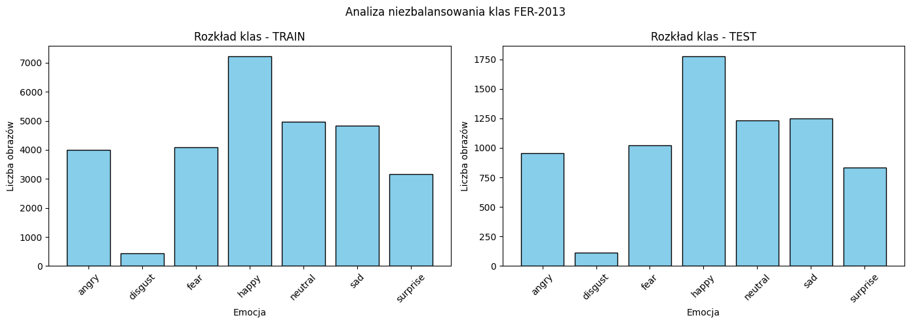
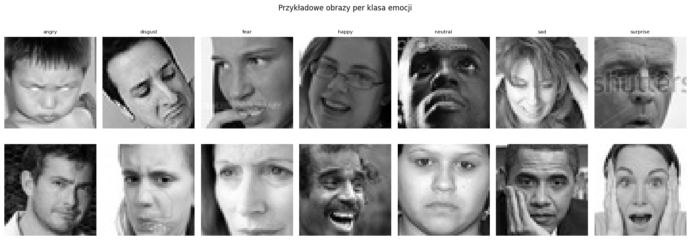
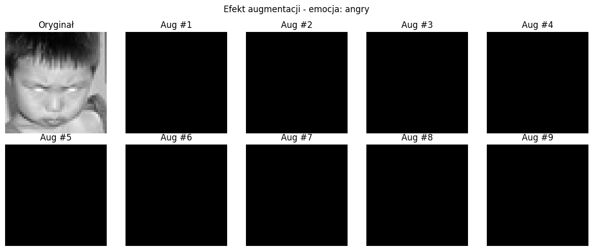
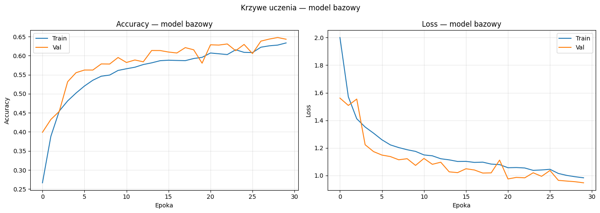
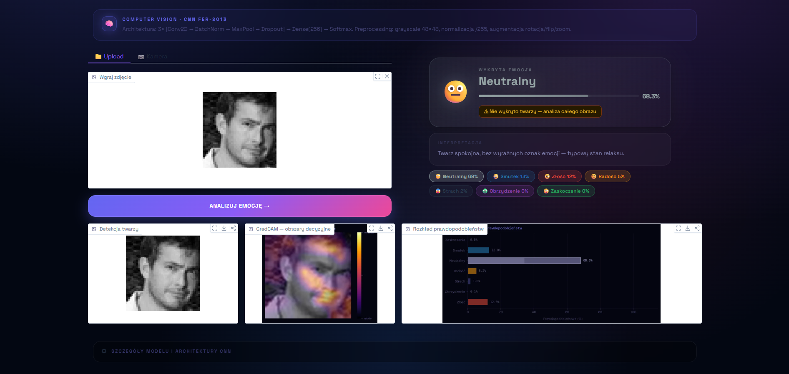
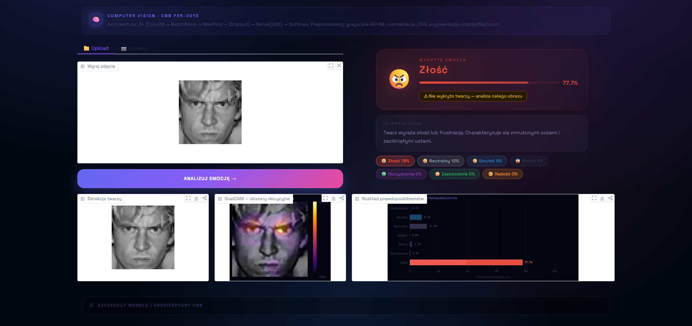
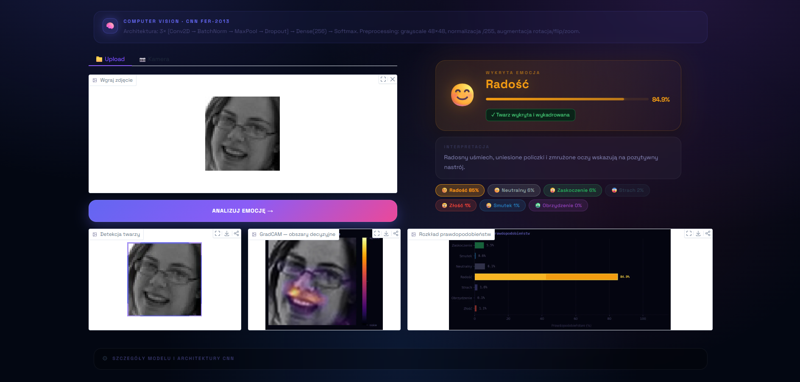
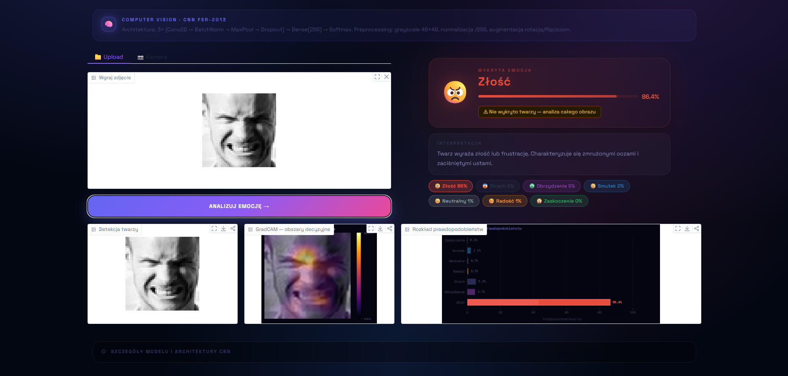

Rozpoznawanie Emocji
z Wyrazu Twarzy
End-to-end pipeline deep learningu na zbiorze FER-2013 — od eksploracji danych i augmentacji, przez CNN i automatyczne strojenie hiperparametrów (Keras Tuner Hyperband), po wdrożenie w aplikacji Gradio z wizualizacją Grad-CAM.
Analiza danych i wyniki modelu
Zrzuty ekranu zostaną uzupełnione po wygenerowaniu wykresów przez skrypty
zajecia2_data_analysis.py i zajecia2_cnn.py oraz
po nagraniu działania aplikacji Gradio.








Praca zaliczeniowa
z uczenia maszynowego II
Celem projektu było zaprojektowanie i wytrenowanie konwolucyjnej sieci neuronowej klasyfikującej siedem kategorii emocji na podstawie zdjęć twarzy ze zbioru FER-2013, a następnie wdrożenie modelu jako interaktywnej aplikacji webowej.
Pipeline obejmuje eksploracyjną analizę danych, augmentację w locie, bazową architekturę CNN, automatyczne strojenie hiperparametrów algorytmem Hyperband oraz wizualną interpretowalność predykcji techniką Grad-CAM.
FER-2013
train_datagen = ImageDataGenerator(
rescale = 1./255, # Normalizacja pikseli do [0,1]
rotation_range = 15, # Losowa rotacja +-15 stopni
width_shift_range = 0.1, # Przesuniecie poziome do 10%
height_shift_range = 0.1, # Przesuniecie pionowe do 10%
horizontal_flip = True, # Odbicie lustrzane
zoom_range = 0.1, # Losowy zoom 90-110%
brightness_range = [0.8, 1.2] # Losowa jasnosc 80-120%
)
Potok inferencji emocji
RGB / PIL
Haar Cascade
resize 48×48, /255.0
Softmax, 7 klas
+ wykres + adnotacja
2× Conv2D(32) z aktywacją ReLU, BatchNormalization, MaxPooling2D i Dropout(0.25). Wyjście: 12×12×32.
Conv2D(32) x2 + BN MaxPool2D + Dropout(0.25) -> 12x12x32
2× Conv2D(64), BatchNormalization, MaxPooling2D i Dropout(0.25). Wyjście: 6×6×64.
Conv2D(64) x2 + BN MaxPool2D + Dropout(0.25) -> 6x6x64
2× Conv2D(128), BatchNormalization, MaxPooling2D i Dropout(0.40). Wyjście: 3×3×128, dalej Flatten → 1152.
Conv2D(128) x2 + BN MaxPool2D + Dropout(0.40) -> 3x3x128 -> Flatten 1152
Warstwa Dense 256 jednostek z ReLU, BatchNormalization i Dropout(0.50), zakończona warstwą Softmax na 7 klas.
Dense(256, relu) + BN Dropout(0.50) -> Dense(7, softmax)
Filtry Conv2D, dropout konwolucyjny i klasyfikatora, liczba neuronów Dense oraz learning rate Adama strojone automatycznie.
kt.Hyperband( build_model, objective='val_accuracy', max_epochs=15, factor=3)
Automatyczne wykrywanie ostatniej warstwy Conv2D modelu — odporne na zmiany architektury bez ręcznej aktualizacji.
for layer in reversed(model.layers):
if isinstance(layer, Conv2D):
return layer.name
Model bazowy vs Hyperband
| Model | Val Accuracy | Val Loss |
|---|---|---|
| Model bazowy | ~60–65% | ~1.05–1.20 |
| Model po Hyperband | ~63–68% | ~0.95–1.10 |
| Poprawa | +3–5% | ~−0.10 |
Wyniki mieszczą się w typowym zakresie dla CNN trenowanych bezpośrednio na FER-2013 bez transfer learningu (state-of-the-art ok. 73–75% przy dużych architekturach pretrenowanych). Strojenie Hyperband potwierdziło mierzalną poprawę dokładności walidacyjnej przy akceptowalnym koszcie obliczeniowym.